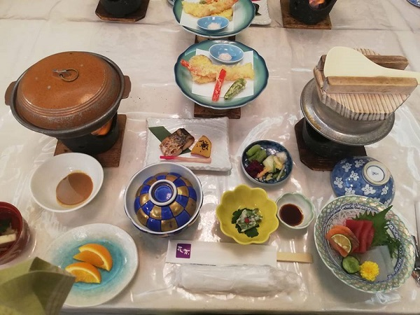

Chào cả nhà, vừa qua mình có một chuyến đi du lịch Nhật Bản vào mùa hè, tầm độ tháng 6. Bình thường người ta chọn đi Nhật vào mùa xuân, mùa thu, mùa đông chứ ít ai chọn mùa hè để tham quan. Tuy vậy lần này có người bạn rủ rê đi Nhật đi vì kiểm tra thấy giá tour mùa này đang rẻ, mà bạn bảo thấy cảnh mùa hè cũng hay ho lắm. Với lại mùa hè thì chắc chắn sẽ được lên núi Phú Sĩ ở trạm 5 (vị trí cao nhất mà xe ô tô có thể lên được). Vậy là đi! Đặt luôn tour Nhật Bản 4N3Đ: Tokyo – Hakone – Fuji – Narita. Với những gì đã trải nghiệm, mình rất hài lòng. Hôm nay mình sẽ viết đôi dòng review về tour này một các chân thực nhất nhé.
Link đặt tour: Tour Nhật Bản 4N3Đ: Tokyo – Hakone – Fuji mùa hè
Nhận xét về tour du lịch Nhật Bản 4N3Đ: Tokyo – Hakone – Fuji – Narita mùa hè thì có rất nhiều điểm mình ưng ý. Dưới đây là một số đánh giá cụ thể của mình ở từng phần:
Lần này đi Nhật, tour cho mình trải nghiệm đi hãng hàng không 4 sao Vietnam Airlines, trước đó thì mình cũng đã bay VNA rồi nhưng các chuyến đi nước ngoài thì mình hay đi mấy hãng giá rẻ để tiết kiệm. Lần này đường xa, bay 6 tiếng lận nên đi hãng 4 sao là một trải nghiệm hoàn toàn khác. Máy bay có chỗ ngồi rộng rãi, lối đi rộng rãi, ghế được bọc vải sạch sẽ. Mỗi ghế ngồi còn được trang bị cả TV và headphone để xem phim, có thêm cả tạp chí, có nút điều chỉnh máy lạnh. Bay đường dài mà có mấy cái này thì… đỡ chán.
Về ăn uống thì cũng rất tiện lợi: trong vé máy bay của VNA đã bao gồm các bữa ăn nhẹ và bữa chính, nước uống. Bạn sẽ được phục vụ bữa chính với một thực đơn với các món ăn phong phú kiểu Tây, kiểu Nhật, kiểu Việt Nam cho bạn lựa chọn. Mình chọn set đồ ăn kiểu Nhật để thưởng thức cho trọn vẹn hương vị chuyến đi. Đồ ăn thực sự rất ngon. Nước uống thì có nước ép trái cây, trà nóng hoặc sữa…
Một vấn đề mình luôn rất quan tâm khi đi du lịch là… toilet, dù là toilet trên tàu xe hay máy bay. Nói chung toilet sạch sẽ thì mình sẽ cảm giác thoải mái hẳn. VNA làm rất tốt vấn đề này.
Chuyến bay khứ hồi từ Narita về lại sân bay Tân Sơn Nhất mình cũng có trải nghiệm tương tự.
XĐĐ Sau khi làm thủ tục hải quan xong, đoàn rời sân bay để ra xe đưa đón. Xe đưa đón ở Nhật làm mình cực kỳ ấn tượng: xe có máy lạnh, không gian rộng rãi, cực kỳ sạch sẽ, các ghế được bọc vải xanh rất mới, mỗi chỗ ngồi rộng rãi đến nỗi có thể duỗi chân ngủ một cách thoải mái. Trước mỗi chỗ ngồi sẽ có một tấm lưới của ghế ngồi trước có trang bị sẵn bịch nilon để du khách bỏ rác. Vào cuối ngày, khi hết tour thì du khách xách bịch rác đó xuống vứt đúng nơi quy định. Tất cả mọi thứ được đưa vào quy củ, sạch sẽ vô cùng.
Tour đi 4 ngày nhưng có 2 buổi tụi mình ăn trên máy bay. Như đã nói ở trên thì bữa ăn phục vụ trên máy bay có thực đơn đa dạng và rất chất lượng. Set đồ ăn kiểu Nhật của mình có đầy đủ món chính món phụ, có cả trái cây tráng miệng, nước uống…
Riêng ngày đầu tiên, vì bay lúc 6h sáng, xuống sân bay đã là 2h chiều theo giờ Nhật Bản (giờ Việt Nam là tầm 12h trưa) nên sau đó du khách tự túc ăn nhẹ. Buổi tối thì đi ăn ở nhà hàng bên đảo nhân tạo Odaiba có view nhìn ra cầu Rainbow vô cùng lãng mạn (hời ơi, đẹp và sang chảnh).
Hầu hết các bữa ăn trong tour này là buffet tự chọn hoặc theo set menu đặt trước. Buffet thì có cả món Tây và món Nhật, du khách thỏa sức ăn theo khẩu vị của mình. Nhưng lưu ý nên lấy từng ít một để không để lại thức ăn thừa. Ăn xong thì mỗi người sẽ tự mang đĩa ra đúng nơi quy định (để rửa). Mỗi người có khoảng 1 tiếng đồng hồ để ăn tại nhà hàng (vì còn phải nhường chỗ cho các đoàn khách khác và người Nhật thì rất đúng giờ).
Các món theo set menu là các món Nhật truyền thống. Chúng được chuẩn bị trong những bộ đồ ăn đóng bằng hộp (mỗi người một bộ riêng), có muỗng, đũa, chén sứ riêng và được trình bày rất đẹp.
Đó là những miếng cá, hải sản tươi hay gừng ngâm, cơm thơm lừng, v.v… Đồ ăn kiểu Nhật truyền thống rất ít dầu mỡ, mỗi món chỉ có 1 chút xíu thôi nhưng mỗi phần ăn lại có rất nhiều món nên ăn hết là no căng. Các món đủ màu sắc và đầy chất dinh dưỡng, trông rất ngon mắt. Đối với người Việt nếu chưa ăn theo kiểu healthy thì có người sẽ thấy lạ lẫm, khó ăn. Nhưng riêng mình thì hoàn toàn hài lòng và đánh giá cao.

⊴ Hành trình tour Nhật 4 ngày 3 đêm của mình ghé Tokyo – đi Hakone – ghé thăm núi Fuji (Phú Sĩ) và về sân bay Narita. Theo tìm hiểu, ở Nhật mọi chi phí đều đắt đỏ, ở càng lâu càng đội thêm tiền nên với số phí hai mươi mấy triệu, đi 4 ngày 3 đêm, sử dụng dịch vụ cao cấp và ghé được 2 điểm đến biểu tượng nhất của Nhật là Tokyo – núi Phú Sĩ là hoàn toàn hợp lý.
⋉ Một số điểm tham quan quan trọng đáng chú ý và cũng rất thú vị. Mình note lại theo thứ tự lịch trình như sau:
Trong chuyến đi này, tụi mình có 3 đêm ngủ ở khách sạn. Đêm đầu tiên tụi mình ngủ ở khách sạn trong thành phố. Phòng ốc khách sạn sạch sẽ, rộng rãi nhưng chính vì vậy nên vị trí ở hơi xa trung tâm (khu vực Kansai).
Đêm thứ 2 tụi mình được trải nghiệm ngủ ở lữ quán – quán trọ truyền
thống kiểu Nhật, được mặc bộ đồ kimono mùa hè (yukata), được tắm
onsen, rất thú vị. Đảo mắt quanh phòng thì thấy đây giống y chang… căn
phòng của Doraemon và Nobita trong truyện. Có tấm nệm lớn và chăn ấm
trải sẵn ở trên sàn (nếu bạn nhận phòng muộn). Cửa là cửa kéo bạn nhé.
Trong phòng cũng có sẵn cả bộ ấm chén để khách muốn có thể tự pha trà,
uống trà, đàm đạo.
Đêm thứ 3, để tiện cho việc di chuyển, đoàn mình ngủ ở khách sạn Narita View – gần ngay khách sạn Narita. Khách sạn này có quán bar trên tầng thượng, rất lý tưởng và lãng mạn cho những ai muốn chill một tý trong đêm cuối ở Nhật. Mình và bạn mình đã ghé lên đây để quẩy tí cuối ngày.
Điểm chung của các khách sạn là đều sạch sẽ, có wifi xài vi vu, đồ ăn sáng siêu ngon. Trong phòng đầy đủ các vật dụng, áo choàng tắm, phòng tắm có đủ khăn tắm, khăn tay, máy sấy tóc…. Bồn cầu còn có nút bấm để xả nước ngược và có tiếng động làm ồn tự nhiên (để át tiếng ồn khi có người sử dụng) rất chi là đã.
| ĐỊA DANH | THỜI GIAN | GIÁ |
|---|---|---|
| TOKYO | 6 NGÀY 5 ĐÊM | 1 TỶ |
| FUKUOKA | 5 NGÀY 4 ĐÊM | 500 TRIỆU |
| KYOTO | 6 NGÀY 5 ĐÊM | 699 TRIỆU |
Kinh nghiệm: Những thông tin cần biết khi đi du lịch Châu Âu